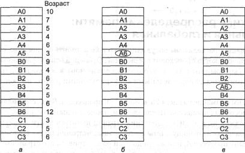
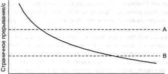
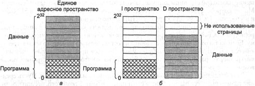
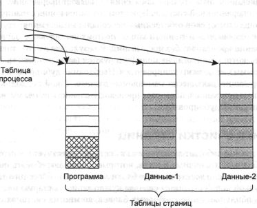

Вопросы разработки систем со страничной организацией памяти
В предыдущих разделах мы объяснили, как работает подкачка по страницам, представили
несколько основных алгоритмов замещения страниц и показали, как их моделировать.
Но знания голой механики недостаточно. Чтобы разработать хорошо работающую систему,
вы должны знать о ней намного больше. Разница такая же, как между человеком,
который знает о том, как ходят ладья, конь, слон и другие шахматные фигуры,
и хорошим шахматистом. В следующих разделах мы рассмотрим другие вопросы, которые
должны принимать во внимание разработчики операционных систем для того, чтобы
получить достойную производительность системы со страничной организацией памяти.
Политика распределения памяти: локальная и глобальная
В предыдущих разделах мы обсудили несколько алгоритмов, ищущих страницу для
замещения, когда происходит прерывание. Основной вопрос, связанный с этим выбором
(который мы тщательно обходили до сих пор): как должна быть распределена память
между параллельными конкурирующими работоспособными процессами?
Обратим внимание на рис. 4.26, а. Здесь три процесса, А, В
и С, составляют набор работоспособных процессов. Предположим, процесс
А вызвал страничное прерывание. Должен ли алгоритм замещения страниц
пытаться найти наиболее давно использовавшуюся страницу, учитывая только шесть
страниц, предоставленные в данный момент процессу А, или же он должен
рассматривать все страницы памяти? Если алгоритм производит поиск только среди
страниц процесса А, наименьший возраст имеет страница А5,
и мы получаем ситуацию, изображенную на рис. 4.26, б.
С другой стороны, если удаляется страница с наименьшим возрастом, независимо
от того, к какому процессу она относится, то будет выбрана страница ВЗ,
и система попадет в состояние, показанное на рис. 4.26, в. Алгоритм на рис.
4.26, б называется локальным, а про схему на рис. 4.26, в говорят,
что это глобальный алгоритм замещения страниц. Локальные алгоритмы соответствуют
размещению каждого процесса в фиксированной области памяти. Глобальные алгоритмы
динамически распределяют страничные блоки между выполняющимися процессами. Таким
образом, количество страничных блоков, предоставленных каждому процессу, изменяется
со временем.
В целом глобальные алгоритмы работают лучше, особенно если размер рабочего
набора может изменяться за время жизни процесса. Если используется локальный
алгоритм и рабочий набор увеличивается в размере, в результате мы получим пробуксовку,
даже когда в системе существует достаточное количество свободных страничных
блоков. Если рабочий набор уменьшается, при локальном алгоритме часть памяти
потратится впустую. Если же используется глобальный алгоритм, система должна
непрерывно выносить решения о том, сколько страничных блоков нужно предоставить
каждому процессу. Можно наблюдать за размером рабочего набора с помощью битов
возраста страниц, но этот метод не всегда позволяет избежать пробуксовки. Рабочий
набор может изменяться в размере за микросекунды, тогда как возрастные биты
являются грубым усреднением за тик часов.
Другой способ состоит в том, чтобы иметь в системе алгоритм для распределения
страничных блоков между процессами. Например, можно периодически определять
количество работающих процессов и предоставлять каждому равную часть памяти.
Соответственно, при наличии доступных (то есть не принадлежащих операционной
системе) 12 416 страничных блоках и 10 процессах каждый процесс получит 1241
блок. Оставшиеся 6 блоков поступают в резерв и могут использоваться в тот момент,
когда происходит страничное прерывание.

Рис. 4.26. Локальный алгоритм замещения страниц против глобального:
исходная конфигурация (а); локальное замещение страниц (б);
глобальное замещение страниц (в)
Хотя этот метод кажется справедливым, существует небольшой шанс, что процессы
размером 10 Кбайт и 300 Кбайт получат равные области памяти. Вместо этого можно
предоставлять страницы пропорционально абсолютному размеру каждого процесса,
тогда процесс размером 300 Кбайт получит долю памяти в 30 раз больше, чем процесс
размером 10 Кбайт. При этом разумно отдавать каждому процессу некоторый минимум,
чтобы он мог работать независимо от своего размера. На некоторых машинах, например,
одиночная команда процессора, состоящая из двух операндов, может нуждаться в
целых шести страницах, потому что сама команда, операнд-источник и операнд-приемник
могут пересекать границы страниц. Если предоставить только пять страниц, программа,
содержащая подобную инструкцию, вообще не сможет выполняться.
Если используется глобальный алгоритм, допустимо запускать каждый процесс
с некоторым количеством страниц, пропорциональным его размеру, но распределение
памяти можно динамически изменять во время работы. Алгоритм PFF (Page Fault
Frequency — частота страничных прерываний) предоставляет один из способов управления
размещением процессов в памяти. Он говорит, когда увеличивать или уменьшать
количество страниц, предоставленных процессу, но не упоминает о том, какую страницу
замещать по прерыванию. Этот алгоритм только контролирует размер набора страниц,
назначенных процессу.
Для большого класса схем замещения страниц, включая алгоритм LRU, известно,
что частота прерываний уменьшается при увеличении числа предоставленных страниц,
как мы обсуждали выше. Эта посылка лежит в основе алгоритма PFF. Данное свойство
иллюстрирует рис. 4.27.

Количество предоставленных страничных блоков
Рис. 4.27. Частота страничных прерываний как функция от количества
предоставленных процессу страничных блоков
Частота страничных прерываний измеряется напрямую: просто считается количество
прерываний в секунду, возможно также с вычислением скользящего среднего за несколько
последних секунд. Существуют достаточно легкие способы такого подсчета, например,
к текущему среднему значению прибавляется значение в секундах в данный момент
и делится на два. Пунктирная линия, обозначенная буквой А, соответствует
частоте страничных прерываний, выше которой она недопустимо высока, поэтому
увеличивается количество страничных блоков, предоставленных прерванному процессу,
с целью уменьшения процента прерываний. Пунктирная линия В соответствует
очень низкой частоте страничных прерываний, позволяющей сделать вывод, что процесс
занимает слишком много памяти. В этом случае у него можно забрать несколько
страничных блоков. Таким образом, алгоритм PFF пытается сохранить частоту подкачки
страниц для каждого процесса внутри допустимых границ.
Важно отметить, что некоторые алгоритмы замещения страниц могут работать
как с локальной политикой замещения страниц, так и с глобальной. Например, алгоритм
FIFO может выгрузить самую старую страницу во всей памяти (глобальный алгоритм)
или старейшую страницу, принадлежащую данному процессу (локальный алгоритм).
Аналогично, алгоритм LRU или некоторые его аппроксимации могут заменить страницу,
не использовавшуюся дольше всего, выбираемую из всей памяти (глобальный алгоритм)
или выбираемую среди страниц, соответствующих выполняемому в текущий момент
процессу (локальный алгоритм). Выбор между локальной и глобальной политикой
в некоторых случаях не зависит от алгоритма.
С другой стороны, для некоторых алгоритмов замещения страниц имеет смысл
только локальная стратегия. В частности, алгоритмы «рабочий набор»
и WSClock относятся к конкретному процессу и должны применяться именно в этом
контексте. Реально для машины в целом не существует понятия рабочего набора,
и если попытаться использовать объединение всех рабочих наборов, то это непременно
приведет к потере характерных свойств и хорошо работать не будет.
Регулирование загрузки
Даже при работе с лучшим алгоритмом замещения страниц и оптимальным глобальным
распределением страничных блоков между процессами может произойти так, что система
начнет буксовать. В самом деле, когда сумма рабочих наборов всех процессов превышает
размеры памяти, можно ожидать пробуксовки. Симптомом этой ситуации является
показание алгоритма PFF, что некоторые процессы нуждаются в дополнительной памяти,
но в системе нет процессов, требующих меньше памяти. В таком случае не существует
способа предоставить больше памяти тем процессам, которым это необходимо, без
повреждения каких-то других процессов. Есть только одно реальное решение: временно
избавиться от некоторых процессов.
Уменьшить количество конкурирующих за использование памяти процессов можно,
выгрузив некоторые из них целиком на диск и освободив все занимаемые ими страницы.
Например, один процесс можно полностью переместить на диск, а его страничные
блоки разделить между буксующими процессами. Если пробуксовка прекращается,
то система может работать некоторое время в таком состоянии. Если не прекращается,
то выгружается следующий процесс и т. д. до тех пор, пока не закончится пробуксовка.
Таким образом, даже при страничной организации памяти и страничной подкачке
все еще необходима обычная подкачка (свопинг), только теперь она используется
для того, чтобы уменьшить потенциальную потребность в памяти, а не с целью возврата
блоков в систему для непосредственного использования.
Обычная подкачка процессов для того, чтобы ослабить загрузку памяти, напоминает
двухуровневое планирование, при котором часть процессов помещается на диск и
используется временный планировщик для составления графика работы оставшихся
процессов. Понятно, что две идеи можно комбинировать, то есть выгрузить достаточное
количество процессов на диск, чтобы сделать приемлемой частоту страничных прерываний.
Периодически некоторые процессы подкачиваются с диска, и тогда туда целиком
выгружаются другие процессы.
Еще одним фактором, который следует принять во внимание, является степень
многозадачности. Как мы видели на рис. 4.4, когда количество процессов в основной
памяти слишком мало, центральный процессор может простаивать значительные периоды
времени. Когда нужно принять решение о том, какой процесс выгружать из памяти,
это наблюдение является аргументом в пользу учета не только размера процесса
и частоты подкачки страниц. Оно важно и для определения того, является ли он
процессом, ограниченным возможностями процессора, или процессом, ограниченным
скоростью ввода-вывода, а также аналогичных свойств остальных процессов.
Размер страницы
Зачастую размер страницы является параметром, выбираемым операционной системой.
Даже если аппаратное обеспечение предусматривает, например, размер страницы
512 байт, операционная система может просто рассматривать страницы 0 и 1, 2
и 3, 4 и 5 и т. д. как страницы размером 1 Кбайт, всегда предоставляя для них
два последовательных страничных блока.
Определение наилучшего размера страниц требует уравновешивания нескольких
параллельных факторов. Поэтому не существует абсолютного оптимального решения.
Прежде всего, возникают два довода в пользу маленького размера страниц. Случайно
выбранный текст, данные или сегмент стека не заполняют целое количество страниц.
В среднем половина последней страницы оказывается пустой, и это дополнительное
пространство пропадает. Такие потери называют внутренней фрагментацией. Если
в памяти n сегментов, а размер страницы равен р байтам, nр/2
байт будет потрачено впустую в результате внутренней фрагментации. Это разумный
аргумент в пользу страниц небольшого размера.
Другой довод становится очевидным, если мы представим себе программу, состоящую
из восьми последовательных этапов, по 4 Кбайт каждый. При размере страницы 32
Кбайт программе должно быть постоянно выделено 32 Кбайт. При размере страницы
16 Кбайт ей необходимо только 16 Кбайт. При размере страницы 4 Кбайт или меньше
программа требует всего лишь 4 Кбайт к любой момент времени. То есть большой
размер страницы скорее, чем маленький, станет причиной того, что в памяти находится
неиспользуемая часть страницы.
С другой стороны, небольшой размер страницы означает, что программам будет
нужно много страниц, следовательно, огромная таблица страниц. Программа размером
32 Кбайт требует всего четыре страницы по 8 Кбайт и 64 страницы по 512 байт.
Как правило, страница за раз переносится на диск и с него, при этом большая
часть времени уходит на поиск цилиндра и задержку вращения, так что перемещение
маленькой страницы занимает почти столько же времени, сколько и большой. Может
потребоваться 64 * 10 мс, чтобы загрузить 64 страницы размером 512 байт, и всего
лишь 4 * 12 мс для загрузки четырех страниц по 8 Кбайт.
На некоторых машинах таблица страниц должна записываться в аппаратные регистры
каждый раз, когда процессор переключается от одного процесса к другому. Если
на таком компьютере страница имеет маленький размер, то время, требующееся для
загрузки таблицы, будет увеличиваться пропорционально уменьшению размера страницы.
Более того, пространство, занятое таблицей страниц, также возрастает с уменьшением
страницы.
Этот последний момент можно проанализировать математически. Пусть средний
размер процесса равен s байт, а страницы — р байт. Кроме того,
предположим, что запись для каждой страницы требует е байт. Тогда приблизительное
количество страниц, необходимое для процесса, равно s/p, что займет se/p
байт для таблицы страниц. Потеря памяти в последней странице процесса вследствие
внутренней фрагментации равна р/2. Таким образом, общие накладные расходы
вследствие поддержки таблицы страниц и потери от внутренней фрагментации равны
сумме этих двух составляющих:
расход = se/p + р/2.
Первое слагаемое (размер таблицы страниц) увеличивается при уменьшении размера
страницы. Второе слагаемое (внутренняя фрагментация) при увеличении размера
страницы возрастает. Оптимальный вариант должен находиться где-то посередине.
Если взять первую производную по переменной р и приравнять ее к нулю,
мы получим равенство:
-se/p2 + 1/2
= 0.
Из этого равенства мы можем получить формулу, дающую оптимальный размер страниц
(принимая во внимание только потери памяти на фрагментацию и размер таблицы
страниц). В результате получится:

Для среднего размера процесса s = 1 Мбайт и размера записи в таблице
страниц е = 8 байт оптимальный размер страницы будет равен 4 Кбайт. В
серийно выпускаемых компьютерах использовался размер страниц в диапазоне от
512 байт до 64 Кбайт. Раньше обычно употреблялась величина 1 Кбайт, но в наши
дни более часто встречаются 4 Кбайт или 8 Кбайт. Так как памяти становится больше,
то размер страниц также имеет тенденцию роста (но зависимость не линейная).
Увеличение вчетверо размера оперативной памяти редко удваивает размер страницы.
Отдельные пространства команд и данных
Большинство компьютеров имеют единое адресное пространство, в котором содержатся
и программы, и данные к ним, как показано на рис. 4.28, а. Если адресное
пространство достаточно вместительно, все прекрасно работает. Но часто адресное
пространство имеет слишком маленький размер, что вынуждает программистов ломать
головы над тем, как разместить в нем все необходимое.

Рис. 4.28. Одно адресное пространство (а); отдельные I и D пространства
(б)
Одно из решений проблемы, впервые примененное на (16-разрядном) компьютере
PDP-11, заключается в разделении адресных пространств для инструкций
(или команд, то есть текста программы) и данных. Они называются I-простран-ство
(instruction — инструкция) и D-пространство (data — данные). Каждое адресное
пространство расположено в диапазоне от 0 и до некоторого максимума, обычно
до 216-1 или 232-1. На рис. 4.28, б изображены
оба пространства. Компоновщик должен знать, когда используются отдельные I-
и D-пространства, потому что если они существуют, адреса данных настраиваются
на виртуальный адрес 0 вместо того, чтобы начинаться после программы.
В компьютере, устроенном таким образом, оба адресных пространства могут иметь
страничную организацию независимо друг от друга. Каждое из них обладает своей
собственной таблицей страниц и собственным отображением виртуальных страниц
на физические страничные блоки. Когда аппаратура хочет выбрать команду, она
знает, что должна использовать I-пространство и таблицу страниц I-пространства.
Аналогично, обращения к данным должно происходить через таблицу страниц D-пространства.
Кроме этого различия, поддержка отдельных I- и D-пространств не вносит каких-либо
специальных осложнений и удваивает доступное адресное пространство.
Совместно используемые страницы
Еще один вопрос разработки — это совместный доступ или разделение страниц. В
больших многозадачных системах часто случается, что в одно и то же время несколько
пользователей работают с одной программой. Ясно, что более эффективно использовать
страницы совместно, чтобы избежать одновременного присутствия в памяти двух
копий одной и той же страницы. К сожалению, не все страницы разделяемы. В частности,
страницы только для чтения, такие как текст программы, можно использовать совместно,
а страницы с данными — нельзя.
Если поддерживаются отдельные I- и D-пространства, относительно просто обеспечить
общий доступ к программам, разрешив двум или более процессам использовать одну
и ту же таблицу страниц для их I-пространства и различные таблицы страниц для
их D-пространств. Обычно при такой реализации поддержки совместного доступа
таблицы страниц и структуры данных не зависят от таблицы процесса. Тогда каждый
процесс в своей таблице процесса имеет два указателя: один на таблицу страниц
I-пространства и другой на таблицу страниц D-пространства, как показано на рис.
4.29. Когда планировщик выбирает процесс для запуска, он использует эти указатели,
чтобы определить местоположение соответствующих таблиц страниц, и настраивает
диспетчер памяти (MMU), использующий их. Даже если отсутствуют отдельные I-
и D-пространства, процессы могут разделять программы (или, что иногда случается,
библиотеки), но механизм совместного доступа усложняется.

Рис. 4.29. Два процесса используют совместно одну и ту же программу,
разделяя ее таблицу страниц
Когда два или более процессов совместно используют один программный код,
возникает проблема разделения страниц. Предположим, что процессы А и
В представляют собой дважды запущенный текстовый редактор и вместе используют
его страницы. Если планировщик решает удалить процесс А из памяти, выгрузка
всех его страниц и заполнение пустых страничных блоков какой-либо другой программой
приведет к тому, что процесс В вызовет массу страничных прерываний, чтобы
вернуть назад эти страницы.
Когда процесс А завершает свою работу, очень важно знать, что страницы
до сих пор используются, чтобы их дисковое пространство случайно не оказалось
освобожденным. Поиск во всех таблицах страниц с целью проверки совместного использования
страниц обычно слишком дорог, поэтому необходимы специальные структуры данных
для отслеживания разделенных страниц, особенно если единицей совместного доступа
является отдельная страница (или серия страниц), а не целая таблица страниц.
Совместное использование данных более сложно, чем совместное использование
кода программы, но и оно возможно. В частности, в системе UNIX после системного
вызова fork родительский и дочерний процессы обязаны совместно использовать
и текст программы, и данные. В системах со страничной организацией памяти часто
делается так: каждому из этих процессов дается своя собственная таблица страниц,
но в них есть указатель на один и тот же набор страниц. Таким образом, не выполняется
копирование страниц при вызове fork. Однако все страницы данных для обоих процессов
отображаются как READ ONLY (только для чтения).
Пока оба процесса только читают свои данные, не модифицируя их, это состояние
может не изменяться. Как только один из двух процессов обновляет слово в памяти,
нарушение защиты «только для чтения» вызывает прерывание, передающее
управление операционной системе. При этом создается копия страницы, и теперь
каждый процесс имеет свой собственный персональный экземпляр страницы. Для обеих
копий разрешается и чтение, и запись, поэтому последующие записи в любую из
двух страниц происходят без прерываний. В результате работы такой системы те
страницы, которые никогда не модифицируются (включая все страницы с текстом
программы), не должны копироваться. Необходимо дублировать только страницы,
содержащие фактически изменяемые данные. Такой подход, называемый копированием
при записи, повышает производительность путем уменьшения количества операций
дублирования.
Политика очистки страниц
Подкачка страниц работает лучше, когда в системе существует достаточное количество
свободных страничных блоков, которые можно затребовать при страничном прерывании.
Если все страничные блоки заполнены и, более того, изменялись, перед загрузкой
новой страницы сначала нужно записать старую на диск. Чтобы обеспечить обильный
запас свободных блоков, во многих системах со страничной организацией памяти
работает фоновый процесс, называемый страничным демоном, который большую
часть времени спит, но периодически просыпается и проверяет состояние памяти.
Если свободно слишком мало блоков, страничный демон начинает выбирать страницы
для удаления их из памяти, используя определенный алгоритм замещения. Если эти
страницы изменялись со времени загрузки, они записываются на диск.
Так или иначе, запоминается прежнее содержимое страницы. В случае если одна
из выгруженных страниц требуется снова еще до того, как ее блок был перезаписан,
ее можно вернуть назад, удалив из пула свободных страничных блоков. Сохранение
запаса страничных блоков в результате дает лучшую производительность, чем использование
всей памяти и затем поиск блока в тот момент, когда он запрашивается. По крайней
мере, страничный демон гарантирует, что все свободные блоки являются чистыми,
значит, когда они требуются, их не нужно спешно записывать на диск.
Осуществить эту стратегию очистки страниц можно, например, с помощью часов
с двумя стрелками. Передняя (длинная) стрелка контролируется страничным демоном.
Когда она указывает на «грязную» страницу, копия страницы на диске
обновляется, а стрелка сдвигается на позицию. Когда она направлена на чистую
страницу, она просто сдвигается вперед. Задняя (короткая) стрелка используется
для замещения страниц, как в стандартном алгоритме «часы». Только
теперь возрастает вероятность попадания короткой стрелки на чистую страницу
благодаря работе страничного демона.
Интерфейс виртуальной памяти
До сих пор в наших рассуждениях предполагалось, что виртуальная память прозрачна
для процессов и программистов, то есть все, что они видят — это огромное виртуальное
адресное пространство на компьютере с небольшой (или меньшей) физической памятью.
Обычно это так и происходит, но в некоторых прогрессивных системах программистам
предоставлен определенный контроль над картой памяти, который они могут использовать
для улучшения поведения программы нетрадиционными способами. В этом разделе
мы кратко рассмотрим некоторые из них.
Одной из причин предоставления программистам контроля над картой памяти является
желание позволить двум и более процессам совместно использовать одну и ту же
память. Если программисты сами будут давать названия областям памяти, один процесс
сможет дать другому процессу имя области памяти, так что этот второй процесс
также сможет ей пользоваться. Если два (или больше) процессов разделяют страницы
памяти, становится реальной высокая пропускная способность совместного доступа
— один процесс пишет в разделяемую память, а другой читает из нее.
Совместное использование страниц может также использоваться для реализации
высокопроизводительных систем передачи сообщений. Когда передается сообщение,
данные обычно копируются из одного адресного пространства в другое, что имеет
значительную стоимость. Если процессы могут управлять своей картой страниц,
можно передавать сообщения с помощью посылающего процесса, убирающего из карты
страницу (страницы), содержащую сообщение, и принимающего процесса, вносящего
ее (их) в карту. При этом должны копироваться только имена страниц вместо всех
данных.
Еще одна современная техника управления памятью носит название распределенной
памяти совместного доступа [114, 204, 205, 369]. Она основана на том, чтобы
позволить нескольким процессам в сети совместно использовать набор страниц,
возможно (но не обязательно) как единственное разделяемое линейное адресное
пространство. Когда процесс обращается к странице, не отображаемой в данный
момент, он вызывает страничное прерывание. Обработчик страничных прерываний,
который может находиться в ядре или в пользовательском пространстве, определяет
машину, содержащую страницу, и посылает ей сообщение с просьбой выгрузить страницу
и послать ее по сети. Когда страница прибывает, она попадает в карту и прерванная
команда перезапускается. Мы будем более детально изучать распределенную память
с совместным доступом в главе 8.